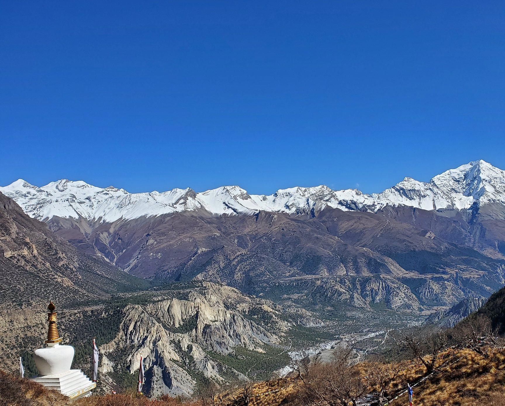
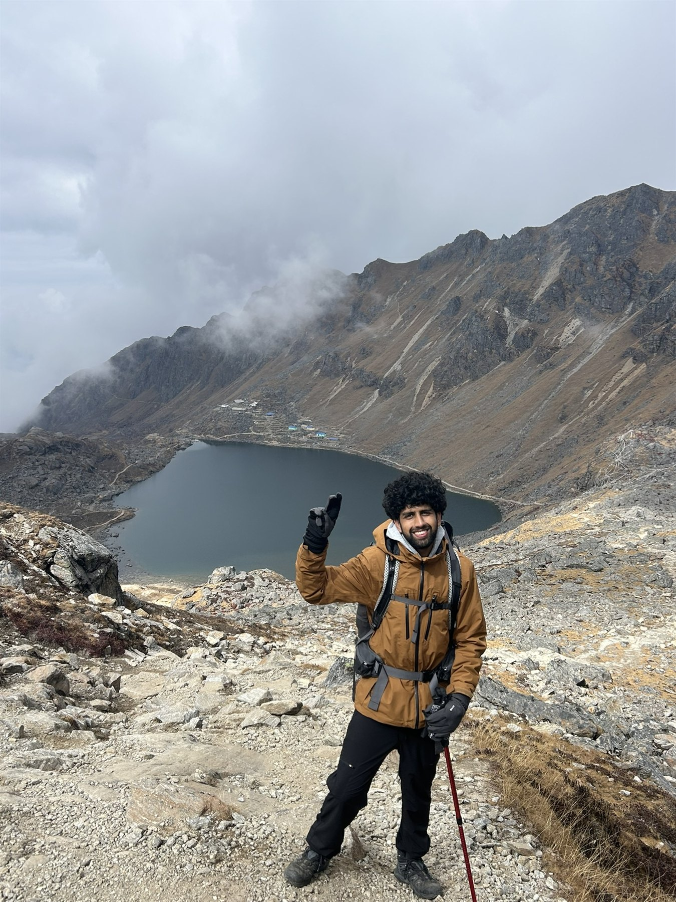
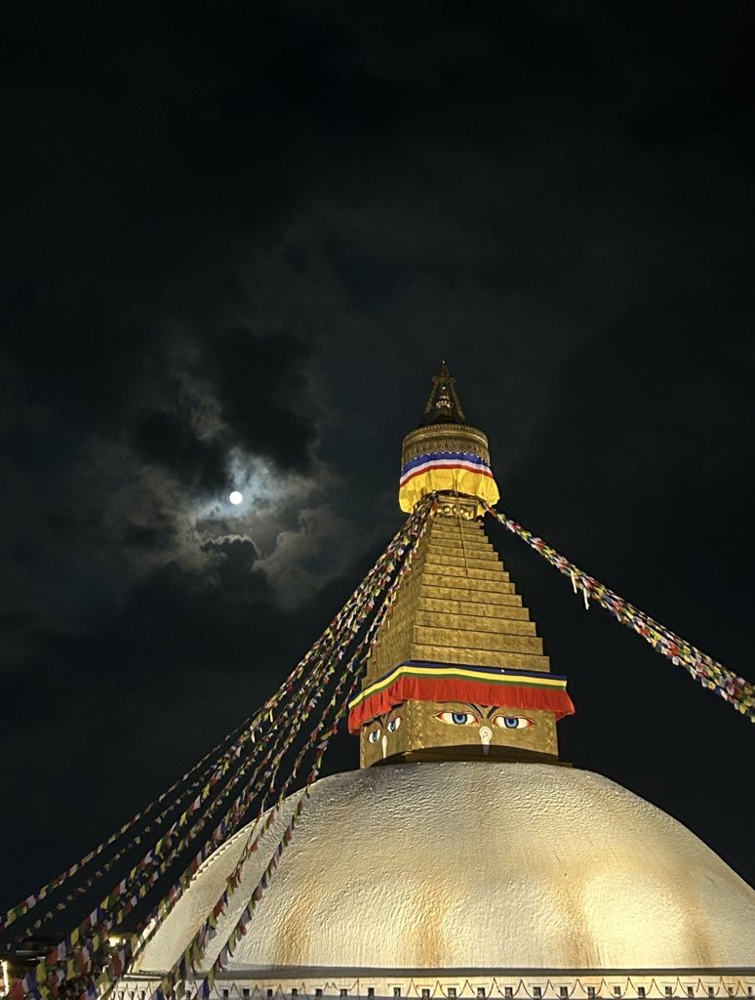
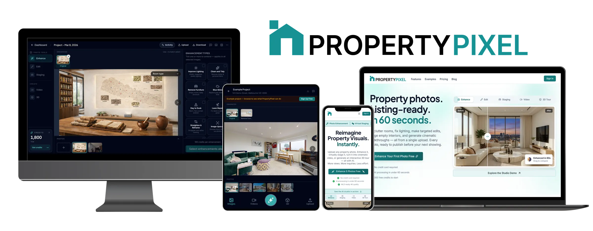

About Me
Grown in the Himalayas, working in the Bay.
I grew up in Kathmandu, in the shadow of the Himalayas, and now design products from the Bay Area. Every project I take on starts the way a mountain does — from the ground up, one honest structural decision at a time.
I care about interfaces that hold up under real use: a booking flow for a family-run beauty studio, an AI-assisted tool for property teams, systems that stay legible no matter how much gets added to them later. Outside of work I'm usually planning the next trek, the next temple, or the next place that looks nothing like home and somehow still feels like it.
Projects
Case studies
EZ Brow & Beauty
A booking-first redesign for a small SF beauty studio — built around trust, warmth, and a "beauty made easy" promise.
View case study →
Property Pixel
AI-assisted property photo enhancement — turning listing photos into publish-ready visuals in under 60 seconds.
View case study →